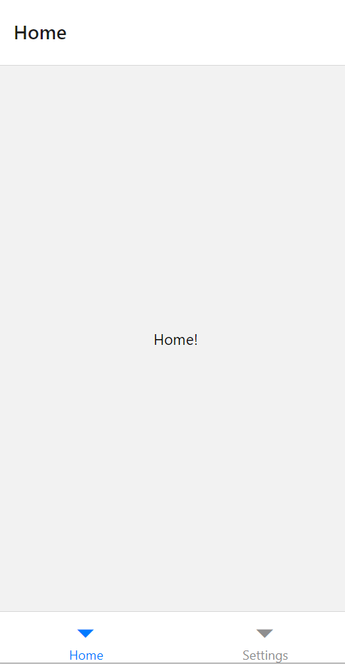
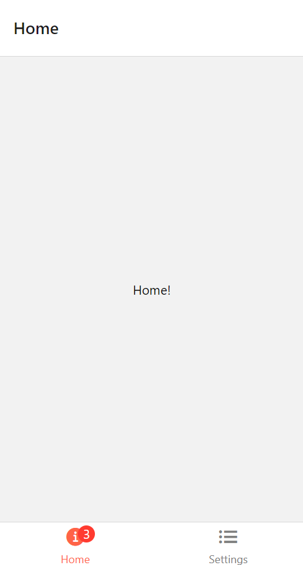
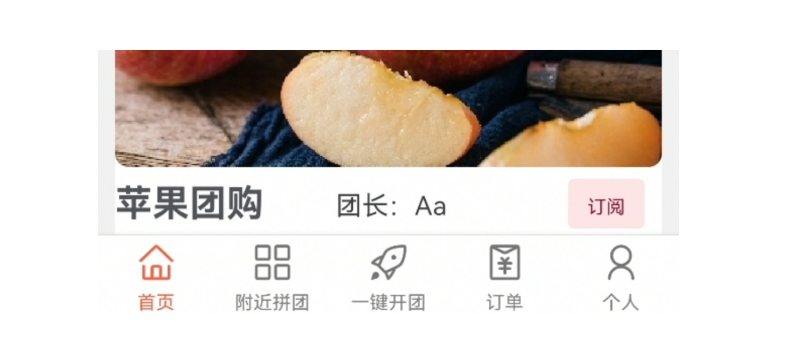

on
react-navigation 6.x 使用指南 (1)
react-navigation 6.x版本的安装、传参、navigator的使用等介绍（part1）。
目前react-navigation的官方文档已经更新到了6.x版本，在官方文档中对于其基本的使用方法也有所介绍，但是对于一些比较复杂的使用场景，或者传参等细节问题并没有给出详细的解决方案。
在这篇文章中，我将介绍react-navigation的安装与Tab navigation的使用
使用npm安装和卸载
npm install --save react-navigation
npm install react-native-reanimated react-native-gesture-handler react-native-screens react-native-safe-area-context @react-native-community/masked-view // 安装相关的依赖
// 在babel.config.js的module.exports中增加这句：
plugins: ['react-native-reanimated/plugin']
// 卸载
npm uninstall react-navigation --save
Tab navigation的使用
基础用法：官方文档中的示例
import * as React from 'react';
import { Text, View } from 'react-native';
import { NavigationContainer } from '@react-navigation/native';
import { createBottomTabNavigator } from '@react-navigation/bottom-tabs';
function HomeScreen() {
return (
<View style=>
<Text>Home!</Text>
</View>
);
}
function SettingsScreen() {
return (
<View style=>
<Text>Settings!</Text>
</View>
);
}
const Tab = createBottomTabNavigator();
function MyTabs() {
return (
<Tab.Navigator>
<Tab.Screen name="Home" component={HomeScreen} />
<Tab.Screen name="Settings" component={SettingsScreen} />
</Tab.Navigator>
);
}
export default function App() {
return (
<NavigationContainer>
<MyTabs />
</NavigationContainer>
);
}
实现效果：底部有一个最基础的的导航栏，没有图标，顶上默认会有一个header，和Tab.Screen的name相一致。

进阶1:添加图标
官方文档中的示例：
import * as React from 'react';
import { Text, View } from 'react-native';
import { Ionicons } from '@expo/vector-icons';
import { NavigationContainer } from '@react-navigation/native';
import { createBottomTabNavigator } from '@react-navigation/bottom-tabs';
function HomeScreen() {
return (
<View style=>
<Text>Home!</Text>
</View>
);
}
function SettingsScreen() {
return (
<View style=>
<Text>Settings!</Text>
</View>
);
}
const Tab = createBottomTabNavigator();
export default function App() {
return (
<NavigationContainer>
<Tab.Navigator
screenOptions={({ route }) => ({
tabBarIcon: ({ focused, color, size }) => {
if (route.name === 'Home') {
return (
<Ionicons
name={
focused
? 'ios-information-circle'
: 'ios-information-circle-outline'
}
size={size}
color={color}
/>
);
} else if (route.name === 'Settings') {
return (
<Ionicons
name={focused ? 'ios-list-box' : 'ios-list'}
size={size}
color={color}
/>
);
}
},
tabBarInactiveTintColor: 'gray',
tabBarActiveTintColor: 'tomato',
})}
>
<Tab.Screen
name="Home"
component={HomeScreen}
options= {{ tabBarBadge: 3 }}
/>
<Tab.Screen name="Settings" component={SettingsScreen} />
</Tab.Navigator>
</NavigationContainer>
);
}
如果想要使用icon的话，需要在Tab.Navigator的screenOption中设置tabBarIcon的渲染效果，根据页面name和是否为选中页面focused设置不同的图标（<Ionicons ... />)，还可以根据tabBarInactiveTintColor和tabBarActiveTintColor设置图标颜色，在Tab.Screen中设置tabBarBadge可以在图标上添加一个小红点，并指示数字，渲染效果如下：

在官方示例中，对于每一个图标都要写一次<Ionicons ... />，太过于繁琐；并且@expo/vector-icons的图标可能在react native的原生环境中不能很好地渲染，于是我们可以做出这样的改进：
import React from 'react';
import {extendTheme, NativeBaseProvider} from 'native-base';
import HomeScreenWrapper from './screens/HomeScreen';
import {Icon} from 'native-base';
import BrowseScreen from './screens/BrowseScreen';
import MyProfileScreenRoute from './screens/MyProfileScreen';
import OrderScreen from './screens/OrderScreen';
import CreateGroupScreen from './screens/CreateGroupScreen';
import {createBottomTabNavigator} from '@react-navigation/bottom-tabs';
import {NavigationContainer} from '@react-navigation/native';
import AntDesign from 'react-native-vector-icons/AntDesign';
<Tab.Navigator
screenOptions={({route}) => ({
headerStyle: {
backgroundColor: '#fda4af',
},
headerTintColor: '#fff',
headerTitleStyle: {
fontWeight: 'bold',
},
tabBarIcon: ({focused, color, size}) => {
let iconName;
if (route.name === '首页') {
iconName = focused ? 'home' : 'home';
} else if (route.name === '附近拼团') {
iconName = focused ? 'appstore-o' : 'appstore-o';
} else if (route.name === '订单') {
iconName = focused ? 'redenvelopes' : 'redenvelopes';
} else if (route.name === '个人') {
iconName = focused ? 'user' : 'user';
} else if (route.name === '一键开团') {
iconName = focused ? 'rocket1' : 'rocket1';
}
// You can return any component that you like here!
return (
<Icon as={AntDesign} name={iconName} size={size} color={color} />
);
},
tabBarActiveTintColor: 'tomato',
tabBarInactiveTintColor: 'gray',
})}>
<Tab.Screen
name="首页"
component={HomeScreenWrapper}
/>
<Tab.Screen
name="附近拼团"
component={BrowseScreen}
/>
<Tab.Screen
name="一键开团"
component={CreateGroupScreen}
/>
<Tab.Screen
name="订单"
component={OrderScreen}
/>
<Tab.Screen
name="个人"
component={MyProfileScreenRoute}
/>
</Tab.Navigator>
在这里，我们使用了iconName记录了应渲染图标的名字，最后只需要return <Icon as={AntDesign} name={iconName} size={size} color={color} /> 一次即可，这里我们使用的图标是AntDesign + native-base里面的icon,经试验能够在react-native的环境中有比较好的渲染效果，最后效果如下：

进阶2：不显示header
在以上的几种实现中，都会携带默认的header，在Tab.Navigator的screenOption中设置headerStyle、headerTitleStyle等属性还可以改变header的背景颜色、字体风格等等，但是如果我们不想显示header的话，就需要在Tab.Screen的options中将headerShown设为false。
<Tab.Screen
name="首页"
component={HomeScreenWrapper}
options= {{headerShown: false}}
/>
在这个时候我们就看不到header了，效果如下：
Discussion and feedback